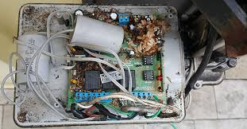
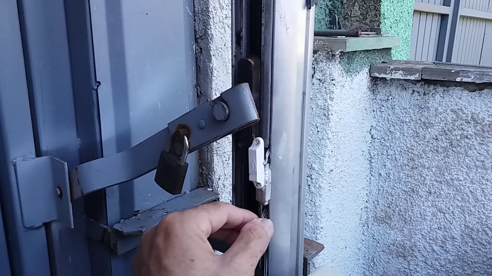
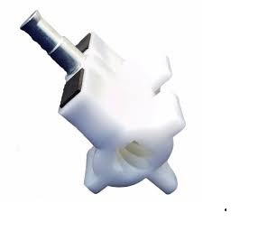
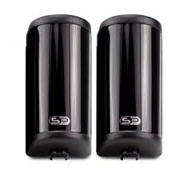
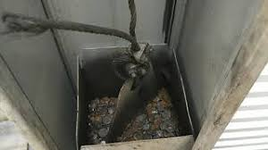
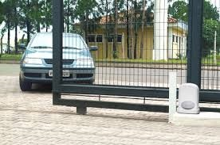
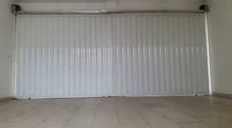
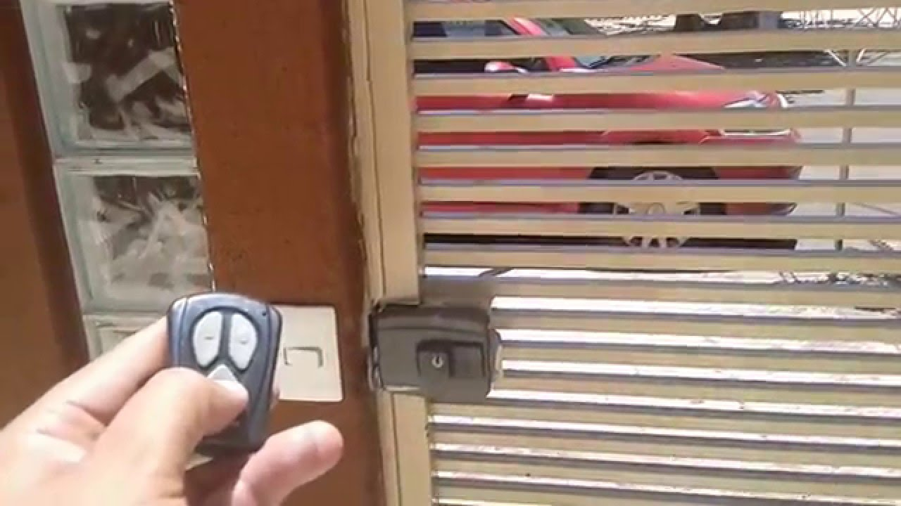

| 
Instalação e configuração de central eletrônica nos portões automáticos. Quando a placa tem o recurso, faça a configuração de percurso, rampa e embreagem, sendo a configuração de embreagem muito importante pois evita a quebra da porca de acionamento e também a queima do motor elétrico. |

Instalação de sensor fim de curso, quando este sensor queimar, se configurar a embreagem ou força do motor na central eletrônica vai evitar a queima do motor. |

Substituição de porca de acionamento de portão basculante, principalmente quando se coloca cadeado no portão e no que aciona o controle remoto acaba destruindo a porca de acionamento, mas se configurar a função embreagem na central eletrônica isso não vai acontecer. |
| 
Instalação de fotocélula em portões automáticos, é um sensor que avisa o automatizador quando deve ser feita a parada abrupta do processo de fechamento. Além disso, também diminui o mumero de amassos e riscos no carro. |

Instalação de trava elétrica nos portões automáticos. Sua função é travar o portão após o fechamento dificultando o arrombamento. |

Substituição de cabo de aço em portão basculante, é um processo demorado e no que substituir o cabo com o portão fechado as braçadeiras que prendem o cabo de aço na caixa de contrapeso não pode tocar na roldana que esta na parte superior e quando o portão estiver aberto a caixa de contrapeso não pode tocar no chão, pois se tocar no chão limita a abertura do portão e ao fechar o portão vai forçar o motor. |

Substituição de ponto de giro, que tem a função de transmitir o peso da caixa de contrapeso ao portão e também permite a regulagem para centralizar o portão entre as duas caixas. |

Colocar o motor no prumo, efetuando as medidas num ponto inferior e superior do motor. E para motor estar no prumo essas medidas devem ser iguais. |

Regulagem do braço de acionamento do portão na porca de acionamento, que deve ser conectado e desconectado de uma forma bem suave da porca de acionamento. |
|
Balanceamento dos contrapesos do portão basculante, o material de contrapeso deve ser colocado nas caixas de contrapeso, o mesmo tipo de material e em quantidades iguais. Nessas condições abrindo o portão manualmente em qualquer altura e soltar o portão, o mesmo deve ficar parado quer dizer não pode subir e nem descer. Dai o portão está balanceado. E característica de um portão desbalanceado, ao acionar o controle remoto para fechamento, o portão dá solavanco e quando o portão estiver aberto, olhando o portão do lado de fora, a folha do portão não fica na horizontal, ela fica inclinado. Então o lado que está mais alto, a caixa de contrapeso esta com mais material de contrapeso. |

Para automatizar o portão basculante, deve ser instalado em suportes industrializados que permitem a regulagem para colocar o motor no prumo e também o braço do portão deve ser conectado e desconectado na porca de acionamento de uma forma bem suave e sem nenhum esforço. |

Para automatizar portão deslizante, inicialmente faça a abertura e fechamento do portão para verificaer se não há nenhum travamento. E siga rogorosamente o manual do fabricante, observando a folga entre cremalheira e engrenagem do motor. |

Para automatizar portão pivotante, inicialmente faça a abertura e fechamento do portão para verificar se não há nenhum travamento. E siga rogorosamente o manual do fabricante, observando as medidas do ponto de articulação do portão até o ponto de articulção do motor. E o suporte que é soldado no portão e conectado na porca de acionamento. O motores devem ser instalados na horizontal, não devem ficar inclinados. |

Para automatizar portão deslizante de fuso, inicialmente faça uma abertura e fechamento do portão para verificar se não há nenhum travamento. E siga o manual do fabricante, observando a posição para soldar o suporte no portão para conectar esse suporte na porca de acionamento. |

Para instalar a fechadura elétrica em portão social, siga o manual de fabricante. E para automatizar pode ser ligada ao porteiro eletrônico ou numa fonte externa e a abertura do portão social pode ser efetuado por um pulsador ou por uma placa eletrônica acionado por controle remoto. |